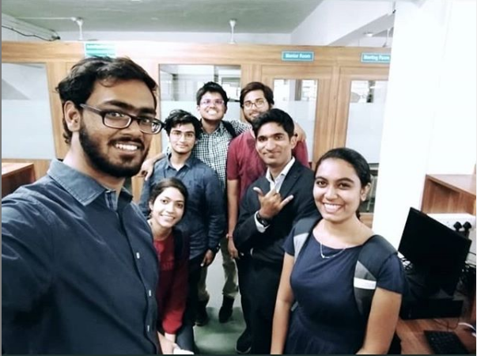
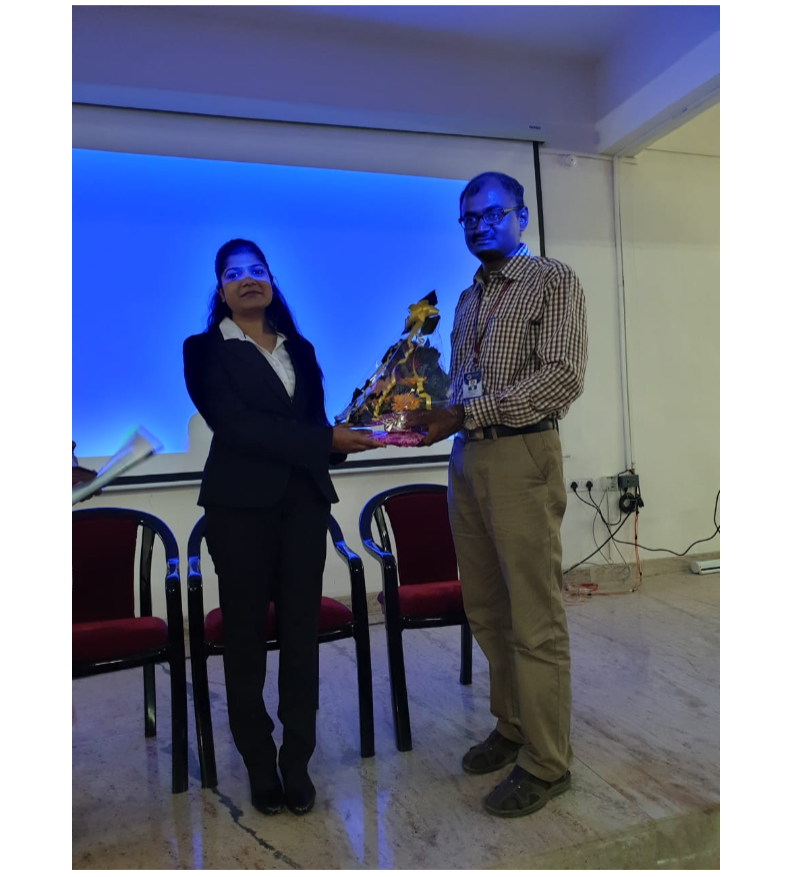
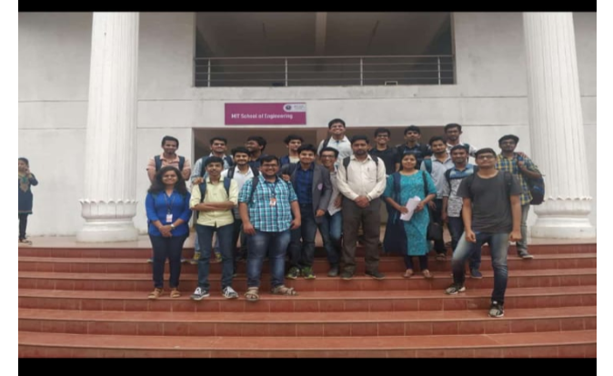

As is evident, it takes a lot of initiative from a given student to bridge the gap between college level programming and what is typically required from the best of programmers. In order to enable students to bridge the gap, we undertook
the following initiatives in the A.Y. 2018 – 2019 :
Teachers Day Celebration and Activities: This was undertaken on September 5 2018. Volunteers for this event were third year CSE students. 
Engineers Day Celebration and Activities: This was undertaken on September 15 2018. Volunteers for this event were third year CSE students.
Programming Interview Quiz for placement preparation (SE and TE): Permissions are being applied for.
Guest Lecture on Cloud Computing: This guest lecture was undertaken in the month of October 2018. The guest was Pooja Pol Pathrikar ma’am. Activity Co-Ordinators: Prof. Asha M. Pawar. 
Peer Teaching For First Year Students: This event was undertaken in the month of September 2018, and was essentially a bootcamp for first year students who were starting off with programming. We used a number of second and third
year students as faculty volunteers. Coursework was: Linux Commands and C Language.
